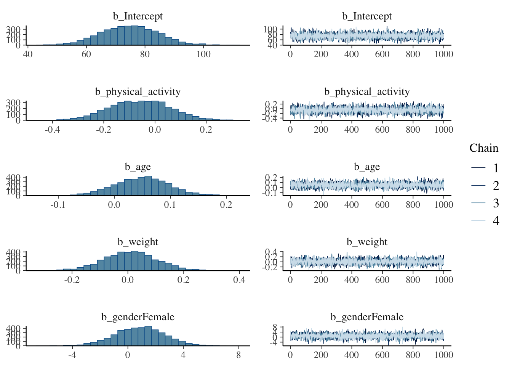
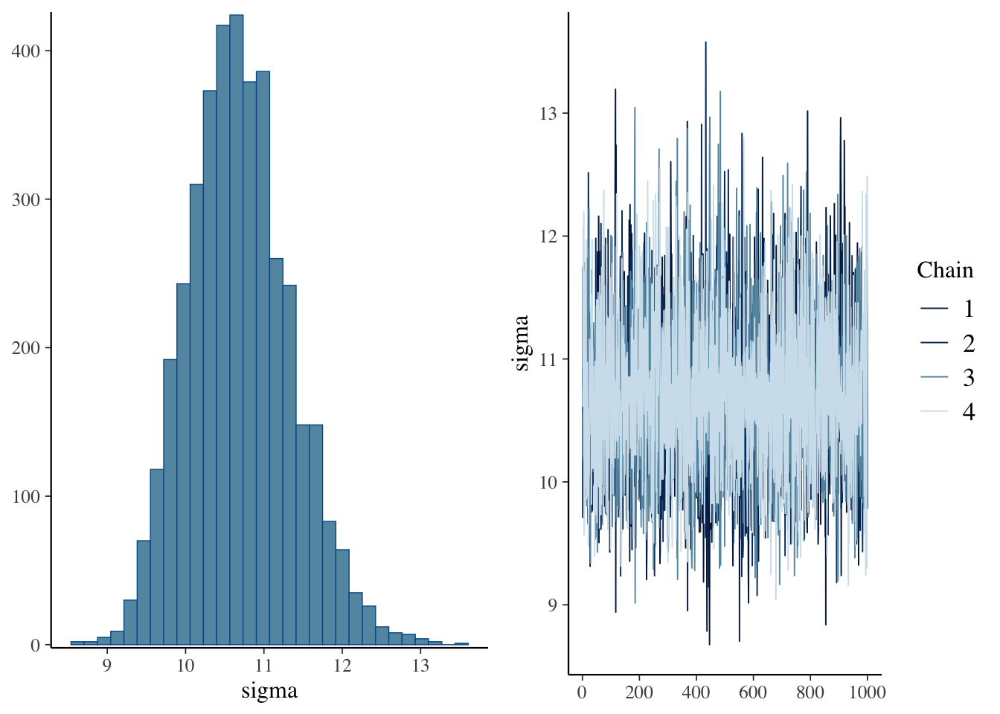

The downloaded binary packages are in
/var/folders/k3/v39j6g_x4bv7mv_xq03986d00000gn/T//RtmptDPPAF/downloaded_packages
install.packages("brms")
The downloaded binary packages are in
/var/folders/k3/v39j6g_x4bv7mv_xq03986d00000gn/T//RtmptDPPAF/downloaded_packages
library(brms)
Loading required package: Rcpp
Loading 'brms' package (version 2.21.0). Useful instructions
can be found by typing help('brms'). A more detailed introduction
to the package is available through vignette('brms_overview').
Attaching package: 'brms'
The following object is masked from 'package:stats':
ar
library(bayesplot)
This is bayesplot version 1.11.1
- Online documentation and vignettes at mc-stan.org/bayesplot
- bayesplot theme set to bayesplot::theme_default()
* Does _not_ affect other ggplot2 plots
* See ?bayesplot_theme_set for details on theme setting
Attaching package: 'bayesplot'
The following object is masked from 'package:brms':
rhat
# Set seed for reproducibilityset.seed(123)# Generate data for 100 individualsn <-145# Generate random values for physical activity level (in minutes)physical_activity <-rpois(n, lambda =60)# Generate random values for heart rate (in beats per minute)heart_rate <-rnorm(n, mean =75, sd =10)# Generate random values for age (in years)age <-sample(18:80, n, replace =TRUE)# Generate random values for weight (in kilograms)weight <-rnorm(n, mean =70, sd =10)# Generate random values for gender (1 = male, 2 = female)gender <-sample(1:2, n, replace =TRUE)# Create a data framedata <-data.frame(physical_activity = physical_activity,heart_rate = heart_rate,age = age,weight = weight,gender =factor(gender, labels =c("Male", "Female")))# View the first few rows of the datasethead(data)
I am interested in assessing the relationship between exercise and heart rate.
# In this example, we'll model heart rate as a function of physical activity, age, weight, and gendermodel <-brm( heart_rate ~ physical_activity + age + weight + gender,data = data,family =gaussian() # Assuming heart rate follows a Gaussian (normal) distribution)
# Print a summary of the fitted modelsummary(model)
Family: gaussian
Links: mu = identity; sigma = identity
Formula: heart_rate ~ physical_activity + age + weight + gender
Data: data (Number of observations: 145)
Draws: 4 chains, each with iter = 2000; warmup = 1000; thin = 1;
total post-warmup draws = 4000
Regression Coefficients:
Estimate Est.Error l-95% CI u-95% CI Rhat Bulk_ESS Tail_ESS
Intercept 74.76 9.73 55.99 93.57 1.00 5020 3108
physical_activity -0.06 0.12 -0.29 0.17 1.00 4815 3149
age 0.05 0.05 -0.04 0.14 1.00 4233 3039
weight 0.01 0.10 -0.18 0.19 1.00 4778 3415
genderFemale 0.86 1.80 -2.72 4.37 1.00 5894 3139
Further Distributional Parameters:
Estimate Est.Error l-95% CI u-95% CI Rhat Bulk_ESS Tail_ESS
sigma 10.69 0.66 9.53 12.07 1.00 4700 3075
Draws were sampled using sampling(NUTS). For each parameter, Bulk_ESS
and Tail_ESS are effective sample size measures, and Rhat is the potential
scale reduction factor on split chains (at convergence, Rhat = 1).
# Plot the posterior distributions of model parametersplot(model)


Now, lets compute our means and credible intervals.
# Extract posterior summaryposterior_summary <-posterior_summary(model)# Extract posterior means from the summaryposterior_means <-fixef(model)posterior_means <- posterior_means[, "Estimate"]# Specify prior means (assuming a normal prior with mean 0)prior_means <-rep(0, length(posterior_means))# Compute credible intervals for posterior meansposterior_quantiles <-quantile(model$posterior, c(0.025, 0.975))# Assign the quantiles to posterior credible intervalsposterior_ci <- posterior_quantiles# Compute credible intervals for prior meansprior_ci <-c(NA, NA) # Prior distribution centered at 0, so credible intervals are NA# Test for difference between posterior and prior meansdifference_test <-ifelse(posterior_ci[1] > prior_ci[2] | posterior_ci[2] < prior_ci[1],"Significant difference", "No significant difference")
Step 3: Results Interpretation and Reporting
# Extract summary of the posterior distributionposterior_summary <-summary(model)# Extract posterior means and credible intervalsposterior_summary_table <-as.data.frame(posterior_summary$fixed)# Extract only the mean and credible intervalsposterior_summary_table <- posterior_summary_table[, c("Estimate", "Est.Error")]# Rename the columns for claritycolnames(posterior_summary_table) <-c("Posterior_Mean", "Posterior_Std_Dev")# Add parameter namesposterior_summary_table$Parameter <-rownames(posterior_summary_table)# Compute credible intervalsposterior_summary_table$Posterior_CI_Lower <- posterior_summary_table$Posterior_Mean -1.96* posterior_summary_table$Posterior_Std_Devposterior_summary_table$Posterior_CI_Upper <- posterior_summary_table$Posterior_Mean +1.96* posterior_summary_table$Posterior_Std_Dev# Specify prior means (assuming a normal prior with mean 0)prior_means <-rep(0, nrow(posterior_summary_table))# Create a summary tablesummary_table <-data.frame(Parameter = posterior_summary_table$Parameter,Posterior_Mean = posterior_summary_table$Posterior_Mean,Posterior_CI_Lower = posterior_summary_table$Posterior_CI_Lower,Posterior_CI_Upper = posterior_summary_table$Posterior_CI_Upper, Difference_Test =ifelse(posterior_summary_table$Posterior_CI_Lower >0| posterior_summary_table$Posterior_CI_Upper <0,"Significant difference", "No significant difference"))library(knitr)
Warning: package 'knitr' was built under R version 4.3.3